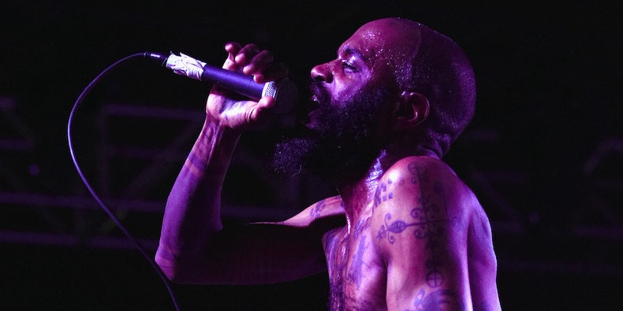
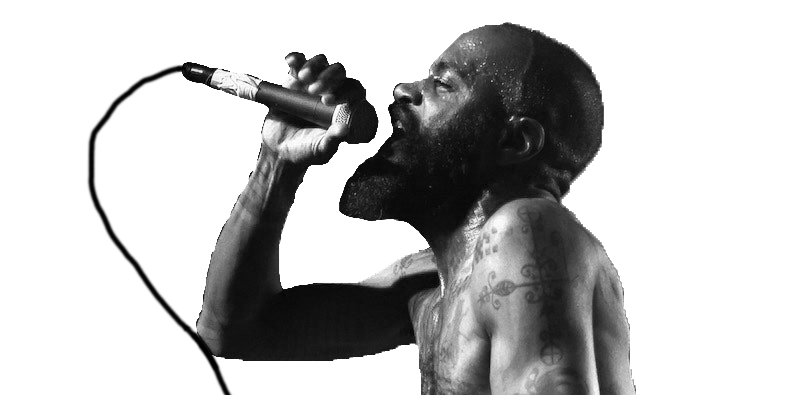
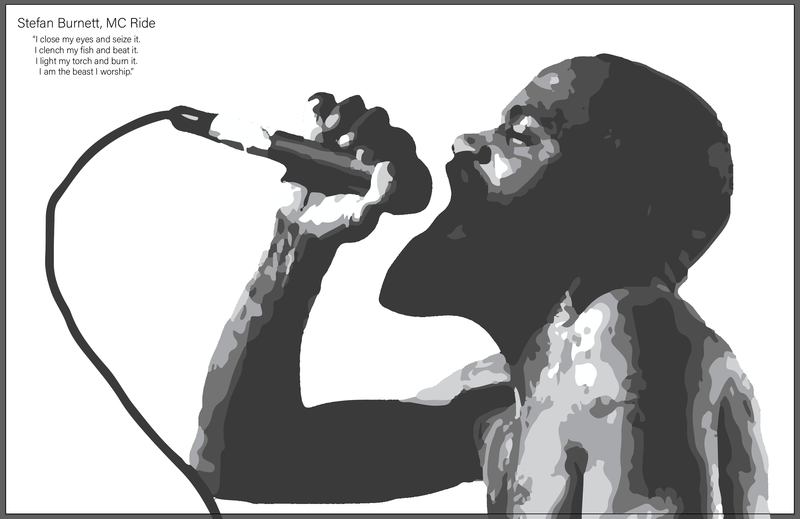
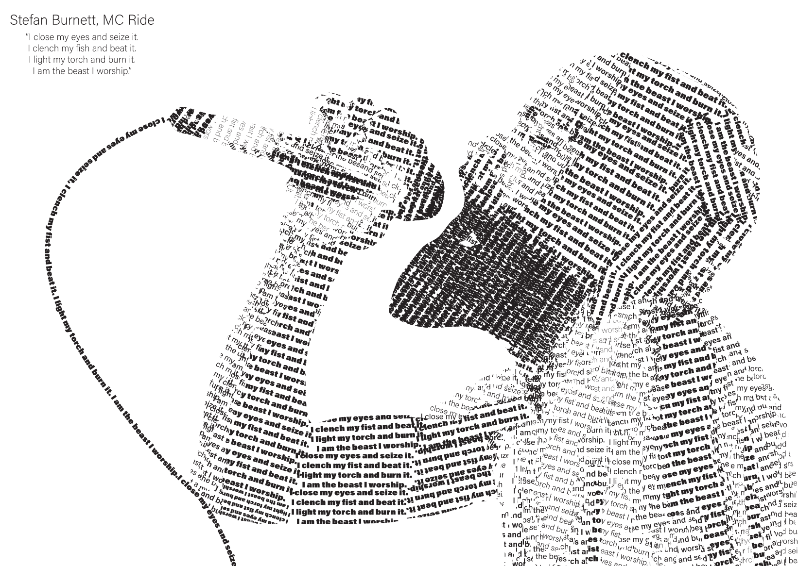

Making a text portrait of MC Ride
For the final assignment in my Foundations of Design class, I had to make a portrait of someone I looked up to using only text. The copy of the text was to contain a quote from that person that I liked. I decided I would make a portrait of Stefan Burnnett, aka MC Ride of Death Grips.
Selecting an image
To start, I had to select a good image of Ride to make into my portrait. Because of the nature of the process I was using to make the portrait, I wanted to choose one that had a decent range of values. I decided to go with this image, because it has really good lighting, which would lead to a better end product.
Cropping and removing color
I started by cropping and removing all the color from the image, which I pretty easily did in Photoshop. One thing of note that I manually did was add the microphone cable, I thought it was an important part of the composition so I manually painted it in. Since I was going to automatically vectorize this in the next step, it didn't have to be perfect.
Making the clipping groups
I then brought the image into Adobe Illustrator, where I used the image trace tool to vectorize the image into 5 different colors of shape. I then selected each group of shapes by their fill color, and grouped them together in a clipping group.
Putting text into the clipping groups
Then, all I had to do is put the text into the clipping groups. In order to give the illusion of value, I increased the density of the text where I needed darker values, and decreased it where I wanted lighter values. There where several ways I achieved this, but the most notable waas using a variable weight font. Variable weight fonts allow you to specify the weight of the weight of the font with a slider, so I had a large range of weights to choose from.
Thoughts on this assignment
I was happy with this assignment. By stripping myself of actual value, it made me realize how important value is to the overall composition of a piece. I think that because of this assignment, in future projects I will be much more aware of value.